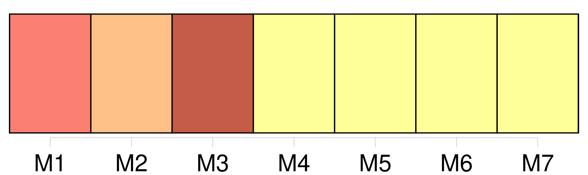
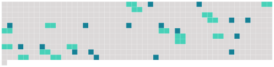

Longueur nb maillons : 33 mentions |
  |
Tout individu âgé de plus de cinquante ans, et sans enfans ni descendans légitimes, qui voudra, durant la minorité d' [un individu] , se [l'] attacher par un titre légal, pourra devenir [son] tuteur officieux en obtenant le consentement des père et mère de [l'enfant] , ou du survivant d'entre eux, ou, à leur défaut, d'un conseil de famille, ou enfin, si [l'enfant] n'a point de parens connus, en obtenant le consentement des administrateurs de l'hospice où il aura été recueilli, ou de la municipalité du lieu de sa résidence. [3 phrases]
Le juge de paix du domicile de [l'enfant] dressera procès verbal des demandes et consentemens relatifs à la tutelle officieuse. [2 phrases]
Elle emportera avec soi sans préjudice de toutes stipulations particulières, l'obligation de nourrir [le pupille] , de [l'] élever de [le] mettre en état de gagner [sa] vie. [1 phrases]
Si [le pupille] a quelque bien et s' [il] était antérieurement en tutelle l'administration de [ses] biens, comme celle de [sa] personne, passera au tuteur officieux, qui ne pourra néanmoins imputer les dépenses de l'éducation sur les revenus [du pupille] [1 phrases]
Si le tuteur officieux, après cinq ans révolus depuis la tutelle, et dans la prévoyance de son décès avant la majorité [du pupille] , [lui] confère l'adoption par acte testamentaire, cette disposition sera valable, pourvu que le tuteur officieux ne laisse point d'enfans légitimes. [1 phrases]
Dans le cas où le tuteur officieux mourrait soit avant les cinq ans, soit après ce temps, sans avoir adopté [son pupille] , il sera fourni à [celui -ci] , durant [sa] minorité, des moyens de subsister, dont la quotité et l'espèce, s'il n'y a été antérieurement pourvu par une convention formelle, seront réglées soit amiablement entre les représentans respectifs du tuteur et [du pupille] , soit judiciairement en cas de contestation. [1 phrases]
Si, à la majorité [du pupille] , [son] tuteur officieux veut [l'] adopter, et que [le premier] y consente, il sera procédé à l'adoption selon les formes prescrites au chapitre précédent, et les effets en seront, en tous points, les mêmes. [1 phrases]
Si, dans les trois mois qui suivront la majorité [du pupille] , les réquisitions par [lui] faites à [son] tuteur officieux, à fin d'adoption, sont restées sans effet, et que le pupille ne se trouve point en état de gagner [sa] vie, le tuteur officieux pourra être condamné à indemniser [le pupille] de l'incapacité où [celui -ci] pourrait se trouver de pourvoir à [sa] subsistance.
Cette indemnité se résoudra en secours propres à [lui] procurer un métier ; le tout sans préjudice des stipulations qui auraient pu avoir lieu dans la prévoyance de ce cas. |
 |
La ressource peut être téléchargée sur la page Ortolang
Si vous avez des questions ou vous voyez des erreurs, merci d'envoyer un mail à silvia.federzoni89@gmail.com
Site développé par S. Federzoni (contact)